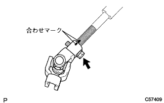
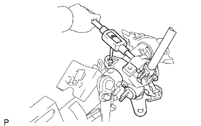
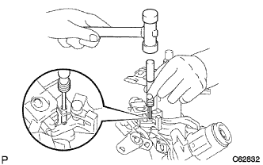
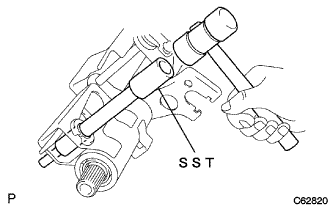
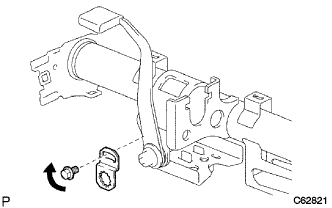
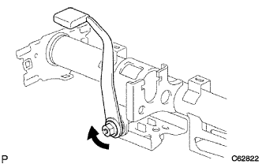
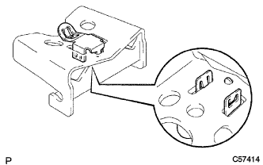
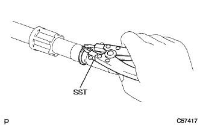
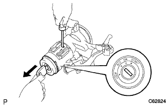
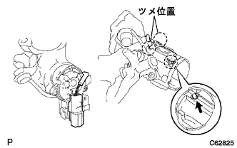

Steering column ASSY decomposition |
| 1. Steering sliding York SUB-ASSY |
|  |
Marked the steering interview Sijan ASSY No.2 and the steering sliding yoke.
Remove the bolt and remove the steering sliding yoke.
| 2. Steering Interamide Shaft ASSY No.2 Remove |
 |
Mark the steering main shift and the steering interview Sijaft ASSY No.2.
Remove the bolts and remove the steering interview Sijap ASSY No.2.
| 3. Steering column bracket Assy UPR removed |
|  |
Use a drill to make a hole in which the reverse tap is standing on the steering rotsuzetto bolt.
Use a reverse tap to remove the steering rotsuzutsu bolt.
|  |
Use a ping -punch and a hammer to remove the steeringrots pins, and remove the steering column bracket ASSY UPR and a shift lever retainer.
| 4. Remove the steering column bracket spacer |
|  |
Use SST and hammer to remove the steering column bracket spacer.
| 5. Tilt steering support color No.1 |
Remove the claws and remove the No. 1 (black) tilt steering support color from the steering column uve.
| 6. Tilt steering support color No.1 |
Remove the claws and remove the No. 1 (white) tilt steering support color from the steering column Youve.
| 7. Tilt steering support reinhorse No.1 |
|  |
Remove the bolt of the tilt leverrotsk No.2 and remove the No. 1 tilt steering support rein hose.
| 8. Remove the steering tilt lever |
|  |
Remove the nut and remove the steering tilt lever.
| 9. Tilt steering stopper removed |
Take two tilt -steering stobs from the steering column Youve.
| 10. Tilt liver lock bolt removed |
| 11. Remove the break away bracket |
Remove the tilt jamp Atsupspring and remove the break away braketto.
| 12. Tilt steering support color No.2 |
| 13. Remove the steering column clamp |
|  |
Remove the claws and remove the steering column clamp from the break away braketto.
| 14. Steering Main Shaftbush is removed |
Use a flathead driver and a hammer to remove the steering main shijaft bussuille.
| 15. Steering main shaft ASSY |
 |
Fix the steering column uve to the vice via the aluminum version.
Use the SST to remove the steering main shiyafu Snatling (outer side).
Use the extensin shover and a hammer to remove the steering main shiap ASSY.
|  |
Use the SST to remove the steering main shiyafu Snutling (inner side).
| 16. |
|  |
Ignitsushi Singyon Tirotsu Tsukushilin Rinder ASSY is the position of ACC.
Insert a minus thin blade driver into the hole in the figure shown in the figure, and extract the ignitsushi -sijon tileslin tilotuslin.
| 17. Unlock warning switch Assy |
Separate the connector of Honzuku Owning Suitsui Assy from Ignitsushi -sijongsuitsu ASSY.
|  |
Push up the center part of Unro -Wonning Suitsui ASSY and remove two claws.
| 18. Ignition or Starter Switch asset removed |
Remove the two screws and remove the Ignitsushion (Starter) Suitsu ASSY from the steering column braketto ASSY UPR.